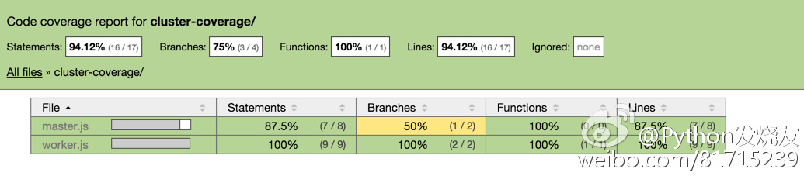

cluster code coverage with istanbul
istanbul is already supported Multiple Process Coverage.
I want to show you how to create code coverage using istanbul.
master.js
const cluster = require('cluster');
const path = require('path');
const workerPath = path.join(__dirname, 'worker.js');
// setup cluster if running with istanbul coverage
if (process.env.running_under_istanbul) {
// use coverage for forked process
// disabled reporting and output for child process
// enable pid in child process coverage filename
cluster.setupMaster({
exec: './node_modules/.bin/istanbul',
args: [
'cover',
'--report', 'none',
'--print', 'none',
'--include-all-sources',
'--include-pid',
workerPath,
]
});
} else {
cluster.setupMaster({
exec: workerPath,
});
}
// fork two workers
cluster.fork();
cluster.fork();
worker.js
const koa = require('koa');
const app = koa();
app.use(function* () {
if (this.query.uid) {
return this.body = {
uid: this.query.uid,
};
}
this.status = 403;
this.body = {
error: 'please login first'
};
});
app.listen(1984);
console.log('[%s] start listening on 1984', process.pid);
test/all.test.js
const request = require('supertest');
describe('cluster coverage unittest', function () {
before(function (done) {
require('../master');
const port = 1984;
const app = {
port: port,
url: 'http://127.0.0.1:' + port,
address: function () {
return {
port: port
};
},
// mock koa api
callback: function () {
return app;
},
};
this.app = app;
setTimeout(done, 1500);
});
it('should 200 when user login', function (done) {
request(this.app.callback())
.get('/?uid=123')
.expect({
uid: '123'
})
.expect(200, done);
});
it('should 403 when anonymous user request', function (done) {
request(this.app.callback())
.get('/')
.expect({
error: 'please login first'
})
.expect(403, done);
});
});
run test
Run the unittest and create coverage report
$ npm run cov
> cluster-coverage@ cov /Users/mk2/git/fengmk2.github.com/blog/2015/cluster-coverage
> npm run clean && npm run test-cov && istanbul report
> cluster-coverage@ clean /Users/mk2/git/fengmk2.github.com/blog/2015/cluster-coverage
> rm -rf coverage
> cluster-coverage@ test-cov /Users/mk2/git/fengmk2.github.com/blog/2015/cluster-coverage
> istanbul cover --include-all-sources node_modules/.bin/_mocha -- --check-leaks test/*.test.js
> istanbul report
See the cluster-coverage report
